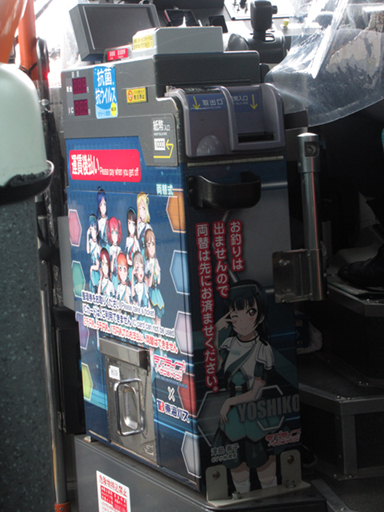

今回はアニメ「ラブライブ!サンシャイン!!」の舞台となっている静岡県の沼津に行ってきました。その時のことをここに記したいと思います。
<ラブライブ!サンシャイン!!とは？>
静岡県沼津市の海辺の町内浦で伝説のスクールアイドル・μ's(ミューズ)に憧れを抱いた一人の女子高生、今作の主人公高海千歌が幼馴染の渡辺曜、東京の学校から来た転校生桜内梨子とともにスクールアイドルグループ「Aqours(アクア)」を結成、「ラブライブ!」と呼ばれる全国大会で優勝を目指すテレビアニメです。
アニメとしては第2期までが放送され、2016年7月～9月の1クール全13話で第1期が放送され、第2期は2017年10月～12月の1クール全13話にて放送されました。その後2019年1月には劇場版が公開されています。
<「ラブライブ!サンシャイン!!」と沼津市の関係>
東京都心からおよそ130kmの場所に位置する静岡県沼津市。そんな沼津市が「ラブライブ!サンシャイン!!」の舞台に選ばれたのは2015年のこと。翌2016年にアニメ第1期が放映されると仲見世商店街などで広告の展開が行われ、市内全域へと広がって行きました。 2017年からは2年間の期間で任命される市のPR大使「燦々ぬまづ大使」の第25期に任命、同年から地元の夏祭りのポスターには毎年のように起用されています。2018年には市内各所にご当地マンホールも設置され、劇場版が公開された2019年からの第26期、2021年からの第27期「燦々ぬまづ大使」にも継続して任命されています。
沼津駅を出て目の前から始まる仲見世商店街には横断幕やタペストリーが多数吊り下げられています。
沼津市とアニメの聖地巡礼者には御用達のスマートフォンアプリ、「舞台めぐり」を運営するソニーが手を組んだ「ヌマヅノタカラプロジェクト」によるクラウドファンディングで2018年5月に設置されたご当地マンホール。
設置当初は設置されたすべてがフルカラーでしたが諸事情※1あって今は黒一色のものも...
沼津にラブライブが来て間もない16年2月にはゲーマーズがオープン。開店と同時に行われた看板娘総選挙で津島善子が選ばれ、就任した善子によって「ヌーマーズ リトルデーモン店」と命名されました。
地元のJAもコラボに参加。Aqoursのご当所内浦で栽培されているブランドみかん「寿太郎」の段ボールにも千歌(大好物:みかん)が起用されています。
沼津を走るラッピングバス。2016年の夏に東海バスと伊豆箱根バスで各1台がデビューしそれからしばらく2社による運行が続いていましたが、2019年秋に市西部の片浜にららぽーとが開業するとその周辺の路線※2を運行している富士急シティバスもラッピングバスに参入。
現在は東海バス5台※3、伊豆箱根バス4台、富士急シティバス1台の計10台が運行しています。
しかし創立者の代で箱根や伊豆半島の反対側を巡って大戦争を繰り広げた西武(伊豆箱根グループ)と東急(東海バス)※4が半世紀越しとはいえラブライブという1つの作品で手を組むとは...

沼津ではバスのみならずタクシーにもラッピングがされており、その数9台。全員が1台ずつにラッピングされています。
Aqours(声優陣)のライブの日には会場まで"沼津から"タクシーで乗り込んでくる猛者も...一体どれだけのタクシー代が掛かるのか...
時にこんな共演も...
沼津市自体は走りませんが、お隣伊豆の国市を介して内浦への玄関口となっている伊豆箱根鉄道の駿豆線にもラッピング電車が走っています。また始発の三島駅ではご当地発車メロディーとして「HAPPY PARTY TRAIN」※5が採用されています。2019年までは各メンバーの誕生日の前後で特別なヘッドマークを掲出していました。
現在は写真上段の2編成が運行していますが、一番最初にラッピングがなされたのは左下の白い編成。同編成は2018年3月までラッピング電車として走っていました。
ちなみにこの3編成、いずれも東京都内で再現しようとすると都の屋外広告物条例に引っかかってしまい走れません...
さて前置きはこれくらいにして、いざ出発しようと思います...
6/19(土)

当日を迎えました。この日の天気は雨、時刻はまもなく朝の5時になろうとしています。これから池袋方面の始発で旅に出ます...
以下、沼津までのダイジェストです。
| 路線 | 列車番号 | 種別 | 行先 | 形式 | 乗車区間 | 画像 | 備考 | コメント |
|---|---|---|---|---|---|---|---|---|
| 西武池袋線 | 4202 | 準急 |
池袋 | 40000系 (L/C車) |
東久留米～池袋 | トイレ・コンセント付きの車両です。
こういう車両のコンセントを使ってる人をあまり見ないのですがただのコンセントでは使いづらいのでしょうか... |
||
| 山手線 | 460G | 内回り | 新宿・渋谷方面 | E235系 | 池袋～新宿 | No image... | ||
| 小田急線 | 1205 | 急行 |
小田原 | 3000形 | 新宿～小田原 | No image... | 訴訟沙汰にもなった※6小田急騒音対策の象徴、6極※7モーター車。 しかし3000形の硬い座席で1時間半はキツい... |
|
| 東海道線 | 1521E | 普通 | 熱海 | E233系 | 小田原～熱海 | グリーン車(¥580) |
小田原～熱海間約20分の距離ですがグリーン車へ。ホリデー料金※8です。
曇天の海も悪くないっすね～。 んでなんでかっていうと灰色に覆われてこの先どこまで続くのかが全くわからないじゃないですか。 |
|
| 1435M | 普通 | 沼津 | 211系 | 熱海～沼津 |  |
列車は5両編成、お手洗いの設備はございません。 お 手 洗 い の 設 備 は ご ざ い ま せ ん 。 |
東久留米を出発して3時間と30分、沼津に着きました。ホーム上のそば屋で朝食をとり改札を出ます。ちょうどこの時静岡県内では知事選を翌日に控えていたこともあり現職※9のK.H氏が演説をしていました。
個人的にK.Hとはリニア大井川問題でゴネ得を狙ってたり当初5月に掛川でやる予定で一度は中止も延期の方向で運営側が調整していたAqoursの野外ライブを名指しで批判、完全中止に追い込んだこともあって完全に敵対していたのですが...（こればかりは他のライバーさんたちにも多いと思います。）
せっかく9時前に沼津へ着いたのですが、これから乗るバスまで2時間もあります。（内浦へ向かうバス自体は30分～1時間おきに出ています。）そこでロータリーでカメラを構えることに。
| 全ての始まりともいえるこの1台。もうこのラッピングのまま5年走っています。
5年間での変化といえば窓上の一文程度でしょうか。劇場版の公開は2019年です。 |
|
| 沼津駅から沼津港を低速※10で結ぶEVバス。 自転車ほどの速度で走るので晴れてる日にはおすすめです。 |
|
| ついに沼津のバスにもICカードが...!未来ずらぁ... | |
2台並んで入ってきました。前から3号車と5号車です。 この2台目で入ってきたほうにこのあと乗ります。 |
|
乗る予定のバスが来ました。このバスで一路内浦へ。

車内もラブライブ一色。
運賃箱には沼津地区の東海バスではまだ使えない※11はずのICカードリーダーが...この運賃箱は川崎鶴見臨港バスから譲渡されたものらしく側面には前乗り先払いで均一運賃※12の路線でしか使われることのないような運賃表示セグメントが。
およそ40分で内浦に到着。降りたバス停すぐ向かいの郵便局もこの通り。函館のポスターも出してるのがさすが郵便局...
近くの海水浴場の階段にAqoursメンバーのアイコンが...これは地元の有志が企画したもので撥水インクで描く「レインワークス」の手法がとられています。雨の日しか見ることができません
昼食は地元内浦漁協直営の「いけすや」さんで「活あじのわさび葉寿司」(¥1000)を。
わさびの葉で包まれた鯵の押し寿司が口の中に広がり、OCです。
昼食を済ませ、少し時間があったので少し離れた場所にある案内所へ。この案内所はAqoursのみならずシリーズの垣根を超えていろいろ展示されています。
早速この夏放送開始のシリーズ最新作が...

このバスで伊豆長岡を経由して沼津に戻ります。
伊豆長岡に着いて発車標を見ると特急の案内が...そこで特急券を購入。昔ながらの硬券で発券されました。
(2021年3月のダイヤ改正から駿豆線内のみの乗車でも有料になりました。)